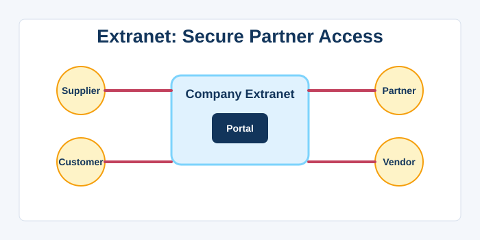
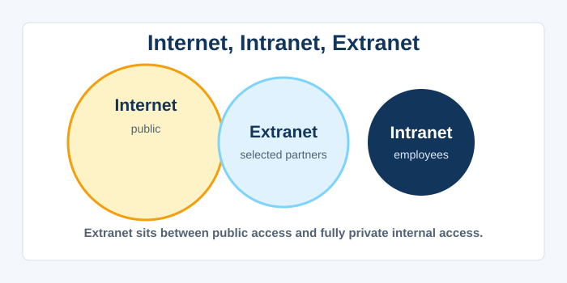
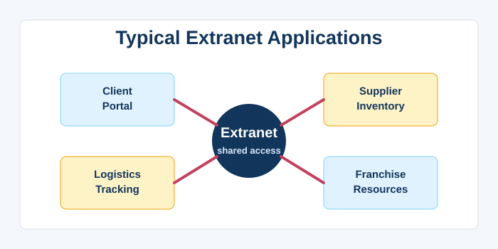
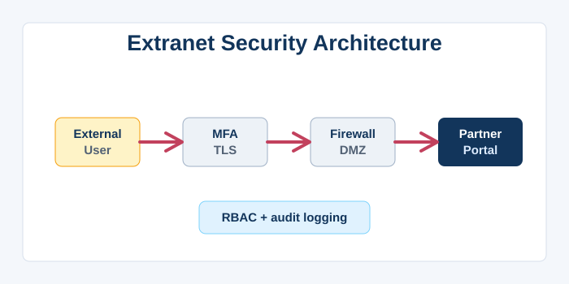
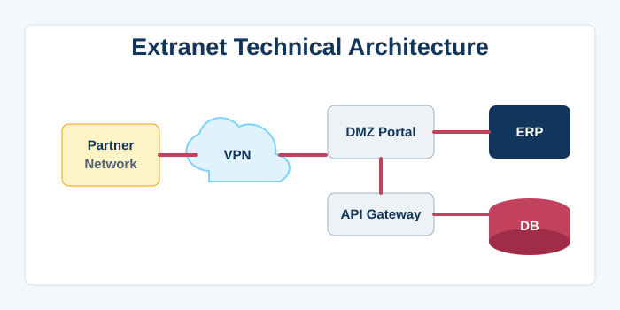
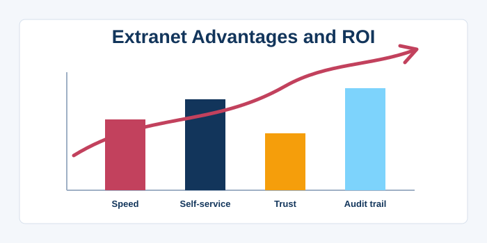
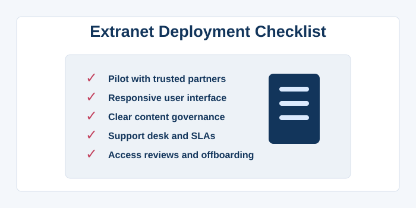
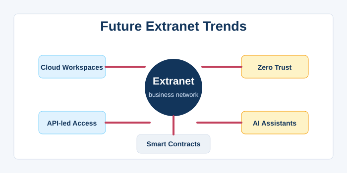

Extranet
1. What is an Extranet?
An extranet is a controlled extension of an organisation’s private intranet that grants access to selected external parties—such as suppliers, customers, business partners, or remote employees—over secure channels. It bridges the gap between a fully public website and a completely private internal network, enabling B2B collaboration and information sharing. Like an intranet, an extranet relies on standard internet protocols (TCP/IP, HTTP, HTTPS) but adds strong authentication, encryption, and granular access controls to protect sensitive data. For example, a manufacturer might create an extranet where its distributors can check inventory levels, place orders, and download marketing materials. A law firm may offer clients access to case documents and billing information through a secure portal. The term “extra” means “outside,” highlighting that the network reaches beyond the company’s physical walls. Extranets can be implemented via dedicated VPN connections, leased lines, or simply as a secure website with login restricted to approved accounts. The boundary between an extranet and a modern cloud‑based collaboration platform (like a shared Slack channel or a client‑facing SharePoint site) is increasingly blurred, but the fundamental concept remains: a semi‑private digital space for high‑trust external interactions. Extranets strengthen business relationships by making supply chains, project management, and customer service more efficient and transparent. They embody the idea that collaboration should not stop at the corporate firewall, provided security and privacy are maintained.

2. Extranet vs. Intranet vs. Internet
The three network types—intranet, extranet, and internet—form a spectrum of accessibility, each serving a different audience. The internet is completely public and open to anyone with a connection. An intranet is fully private, accessible only to internal employees within the corporate network. An extranet sits in the middle: it is private but opened selectively to external stakeholders. While an intranet may host employee salary data and internal strategy documents, an extranet is more likely to contain purchase orders, shared project plans, product specifications, and support tickets. Authentication methods differ: intranets use internal directories (Active Directory), while extranets often require federated identity or external account provisioning. Security for extranets is more complex because data crosses the corporate perimeter and often passes over the public internet, necessitating robust encryption and, optionally, leased lines or dedicated WAN links. Extranets also face a wider range of threats, including partner credential theft and data leakage to competitors. The internet is a broadcast medium; an intranet is a necessity; an extranet is a strategic tool for tightening collaboration across organisational boundaries. Organisations often manage multiple extranets for different partner groups, each with tailored access rights and branding. The key is that the extranet provides the feel of a private portal without requiring the partner to be on the same physical network, thanks to VPNs and secure web portals.

3. Typical Business Applications
Extranets are deployed across industries to solve specific collaboration and transaction challenges. In retail, a supplier extranet allows manufacturers to view real‑time sales data, manage inventory replenishment, and track payments. Professional services firms (law, accounting) use client portals to securely exchange sensitive documents, invoices, and messages, ensuring compliance with data protection laws. Automotive and aerospace manufacturers share CAD drawings, bill‑of‑materials, and quality reports with tier‑one suppliers over extranets. Healthcare networks build extranets to link hospitals, clinics, and insurance companies for patient referrals and claims processing. In education, university extranets provide prospective students, alumni, and partner institutions with application status, transcripts, and course materials. Franchise businesses distribute operations manuals, training videos, and marketing assets to franchisees via an extranet, maintaining brand consistency. Logistics companies give shippers and consignees access to shipment tracking, proof‑of‑delivery, and reporting dashboards. A common characteristic is the need to share information that is too sensitive for a public website yet essential for the business relationship. These applications reduce phone calls, emails, and paperwork, while providing audit trails and version control. By automating routine B2B interactions, extranets lower transaction costs and increase the speed of business. Implementation can range from a simple password‑protected folder on a web server to a full‑featured portal with ERP integration.

4. Security and Access Control
Securing an extranet is more challenging than securing an intranet because external users access it over untrusted networks, and the organisation has less control over their devices. Strong authentication is the cornerstone: two‑factor authentication, client certificates, and Single Sign‑On via SAML or OAuth are commonly used to verify identities. Role‑based access control is even more critical to ensure that Partner A cannot see Partner B’s data; this often requires multiple permission layers and data‑level filtering. Encryption must cover both data in transit (HTTPS, TLS 1.3) and, optionally, data at rest with database encryption. Virtual Private Networks (VPNs) create an encrypted tunnel for all extranet traffic, but modern zero‑trust solutions use software‑defined perimeters where each request is authenticated and authorised independently. Firewall rules must be tightly configured to allow only specific protocols and IP address ranges, though this is harder with mobile or overseas partners. Detailed audit logging is essential: who accessed what, when, and from which IP, enabling forensic investigation and compliance reporting. Access reviews should be scheduled periodically to remove dormant accounts of former partners or employees. The extranet must be regularly penetration‑tested to uncover vulnerabilities in web applications, as well as in any integrated APIs. Data loss prevention policies should monitor and alert on large downloads or suspicious query patterns. Ultimately, the security model must balance the friction of access against the sensitivity of the information, always erring on the side of protecting the data and the business relationship.

5. Technical Architecture and Connectivity
Extranets can be built using several technical models, depending on performance, security, and cost requirements. The simplest is a web‑based portal: a set of HTTPS pages on a web server protected by login, which partners access via a standard browser. For higher security, the portal is placed in a DMZ (demilitarised zone) behind a set of firewalls, with backend connections to internal databases and applications. Dedicated leased lines (MPLS, direct fibre) provide guaranteed bandwidth and isolation but are expensive and inflexible, mostly used for large, stable partnerships. Site‑to‑site VPN tunnels over the public internet offer a balance of security and cost, encrypting all traffic between two networks automatically. Remote access VPNs with client software allow individual users to connect securely. Federated identity using standards like SAML or OpenID Connect allows partners to use their own corporate credentials, simplifying onboarding and offboarding. APIs are often exposed directly via API gateways that apply rate limiting, authentication, and monitoring, enabling programmatic access to data. The architecture must handle the reality that external partners may have varying technical capabilities, so the extranet should degrade gracefully on older browsers and be mobile‑friendly. Load balancers and content delivery networks can help serve static content to geographically dispersed partners with low latency. Backup connectivity and failover mechanisms ensure high availability because extranet downtime can directly disrupt supply chains. A well‑architected extranet scales from a handful of VIP partners to thousands of external users without compromising security or performance.

6. Advantages and ROI
Organisations invest in extranets because they deliver tangible returns by streamlining inter‑organisational processes. Faster information exchange reduces lead times; a supplier that can instantly see a manufacturer’s production schedule can pre‑emptively ship components, avoiding downtime. Customer self‑service portals (a type of extranet) deflect call‑centre volume by allowing clients to check order status, download invoices, and update account details themselves. Collaboration on documents becomes asynchronous and version‑controlled, eliminating the confusion of multiple emailed attachments. Extranets create a permanent, searchable repository of all correspondence, decisions, and files related to a partnership, which is invaluable during audits or disputes. They can be a competitive differentiator: a company that offers an easy‑to‑use, integrated extranet may be preferred by partners over one that relies on faxes and phone calls. The transparency builds trust; when both parties can see the same data, accusations of miscommunication decline. Extranets also simplify compliance with regulations that require secure handling of partner or customer data. The initial setup cost—for servers, software, and integration—is often recouped within months through operational savings. Furthermore, the data gathered from extranet usage can provide business intelligence, such as which partners are most active or which products generate the most support queries. In a globalised economy, an extranet is not a luxury but a necessity for managing complex, multi‑tier business relationships.

7. Best Practices for Deployment
Launching a successful extranet requires more than just technology; it demands careful planning around user experience, governance, and relationship management. Start with a clear scope and a pilot group of trusted partners to test functionality, gather feedback, and refine before a broad rollout. Design the user interface to be intuitive for external users who may have minimal training; the interface should mirror familiar public websites. Invest in a responsive design, as partners will access the extranet from desktops, tablets, and phones. Establish a governance committee that sets policies for content publishing, user access, and data retention. Automate user provisioning and de‑provisioning; when a partner relationship ends, their access should be revoked immediately via integrated HR‑to‑system workflows. Create a dedicated help desk or support portal for external users, with clear SLAs, because a non‑functional extranet can freeze a partner’s operations. Ensure the extranet is multi‑language if you deal with international partners. Regularly refresh content and engage partners with surveys to keep the portal from becoming a ghost town. Document the APIs and data formats so that tech‑savvy partners can automate their side of the interaction. Finally, treat the extranet as a living product, not a one‑time project—allocate budget and staff for ongoing improvement, security updates, and feature additions. Following these best practices transforms an extranet from a technical afterthought into a strategic asset that deepens and secures external relationships.

8. Future Trends in Extranet Technology
The concept of the extranet is evolving rapidly with the rise of cloud computing, zero‑trust security, and artificial intelligence. Cloud‑based collaboration platforms (Microsoft Teams, Slack Connect, Google Workspace) are effectively becoming extranets by allowing organisations to create shared channels and workspaces with external guests. API‑led connectivity is replacing traditional portal interfaces, where partner systems communicate directly through secure, managed APIs. Blockchain‑based smart contracts promise automated, tamper‑proof business logic that executes automatically when conditions are met, potentially revolutionising supply chain extranets. Zero‑trust architecture eliminates the implicit trust of a VPN, requiring every request to be verified, regardless of whether it originates from a partner’s network. AI‑powered chatbots and virtual assistants on extranet portals can answer common questions, guide users, and even place orders on behalf of the partner. Edge computing may push extranet services closer to the partner’s location, reducing latency for real‑time data exchange. Biometric authentication and hardware tokens will further secure access, especially for high‑stakes transactions. Data sovereignty laws are forcing extranets to be more intelligent about where data is stored and processed, requiring geo‑fenced architectures. As digital business ecosystems become more complex, the extranet will be the connective tissue that enables secure, automated, and intelligent collaboration between companies. The future extranet will be less a standalone website and more an integrated, programmable business network layer.
